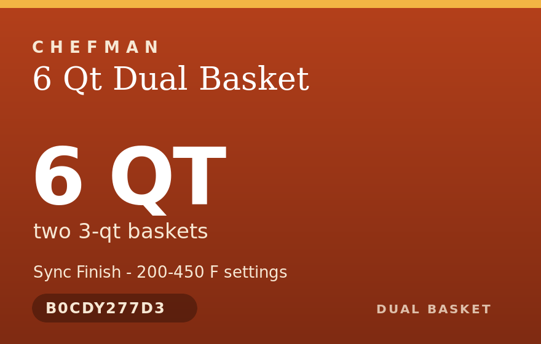

Air fryers
Two baskets, one basket, or a countertop oven
Kitchen Counter · Listings read 2026-11-20 · Specifications are what the makers publish, not test results
Three air fryers that solve the same problem three different ways. The choice is mostly about layout — how many things you cook at once, and whether you want a basket you shake or an oven you open — plus the one number nobody can guess for you: the depth of your counter. Every figure below is copied from the maker's own listing and linked, so you can check it.
The short version. Cooking two different things at once? The dual basket. Want to bake as well as crisp? The oven. One deep basket and fewer parts to wash? The 8-quart. All three are 1700 watts and none of them will tell you how much food it makes — that is a portion question, not a spec.

Our pick · Dual basketChefman 6 Qt Dual Basket Air Fryer Oven
Two independent 3-quart baskets with Sync Finish, a 200–450°F range and 1700W. The listing also names Hi-Fry, a mute option and auto shut-off.
2 × 3 qt200–450°F1700W
Consider if: you regularly cook two different foods and want them to finish together.
Current price on Amazon
Open the listing
The supplied short link for this product stopped reaching it on 2026-11-20 (it lands on the Amazon homepage), so this button goes to the product page until it is re-tested — FLG-017.
Listing conflict: the title says 6 quarts; the details table says 6 liters. Both are shown — FLG-022.
Source: official listing B0CDY277D3
 Oven combo · 26 qt
Oven combo · 26 qtEmeril Lagasse 26QT French Door Air Fryer Toaster Oven
A 26-quart countertop oven with a 75–500°F range and six named accessories. The listing disagrees with itself on preset count (24 vs 25) and accessories; both readings are published.
26 qt cavity75–500°F1700W
Consider if: you want oven-style baking and a wide low-temperature range, and you have 16.9 inches of depth.
Current price on Amazon
Check price on Amazon
Source: official listing B09B7SB46R
 Single basket · 8 qt
Single basket · 8 qtChefman 8 Qt TurboFry Air Fryer
One 8-quart basket, 4-in-1 functions and a 450°F Hi-Fry setting. The product details list 200–400°F while the title claims 450°F, so both numbers appear here.
8 qt basket200–400°F1700W
Consider if: one deep basket suits you better than two shallow ones, and you want fewer parts to wash.
Current price on Amazon
Check price on Amazon
Listing conflicts: 450°F in the title vs 200–400°F in the specifications; 1000W in one bullet vs 1700W in the specification table — FLG-023.
Source: official listing B08DKYBTPH
Choose by the constraint, not the adjective
Air-fryer marketing leans on words like crispy and fast, which nobody can measure from a listing. Three constraints decide most of this choice, and all three are published numbers.
The three comparison points that actually separate these machines. Sorted by the constraint a buyer usually hits first.
| Your constraint | What to check | Where these three stand | Source |
|---|
| Counter depth | Listed depth, plus the clearance the manual requires — which is not published here | 12.75 in · 13.38 in · 16.9 in | B08DKYBTPH · B0CDY277D3 · B09B7SB46R |
| How many foods at once | Basket count and whether the zones are independent | Two independent baskets (dual) · one basket (8 qt) · one cavity (oven) | B0CDY277D3 · B08DKYBTPH · B09B7SB46R |
| Low-temperature cooking | The lowest published setting — this is what separates an oven from a basket | 200°F (dual) · 200°F (8 qt) · 75°F (oven) | B0CDY277D3 · B08DKYBTPH · B09B7SB46R |
Questions people ask at this point
Is a bigger quart number always better?
No. Two 3-quart baskets and one 6-quart basket hold the same total, but they do not cook the same meal. Capacity describes the container, not the portion — see the capacity checklist.
Which one is quietest?
None of the listings publishes a noise figure, so this site has nothing to compare. We are not going to guess.
Do any of these replace a full oven?
They replace some oven jobs. The 26-quart model is the closest to oven-style cooking on paper, which is why its low setting goes to 75°F. Whether it replaces your oven is a question about your cooking, not a spec.